永远给自己留一手牌~
OCR 识别提示（待核对）
- OCR 自动识别文字，尚未逐字校对；可能错字、漏字、漏行，数字、姓名、标点及断行也可能有误，请以截图为准。
- 这里只保留 PDF 已截到的正文、留言和作者回复；截图以外的留言不在此存档中。
- 未从截图推断留言总数或回复关系；手机界面文字也可能混入 OCR。
- 低置信标记仅为机器提示，并不表示未标记的文字已经准确。
识别工具：tesseract 5.5.0 · tesseract-ocr/tessdata_best chi_sim。识别器置信度仅用于提示核对，不是文字准确率。
第 1 页 · 原始截图
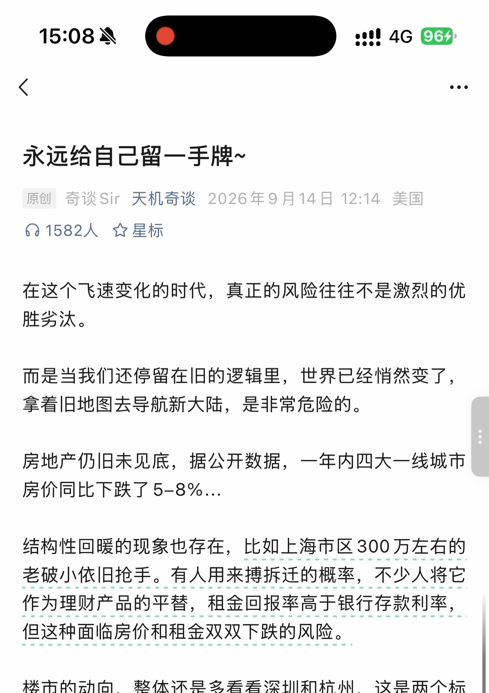
查看本页自动识别文字（OCR待核对） · 15 处低置信度提示
以下为未经逐字核对的自动识别结果，请以上方原图为准。
识别器标记 15 处低置信度，请对照截图核对
这些是识别器的风险提示，并不等于已确认的错误。
- oo 人》
- 原创奇谈 Sir 天机奇谈 2026 年 9 月 14 日 12:14 美国
- 人 1582 人空星标
- 在这个飞速变化的时代， 真正的风险往往不是激烈的优
- 胜乡汰。
- 而是当我们还停留在旧的逻辑里， 世界已经悄然变了，
- 拿着旧地图去导航新大陆， 是非常危险的。 上
- 房价同比下跌了 5-8%.…
- 结构性回暖的现象也存在， 比如上海市区 300 万左右的
- 作为理财产品的平葵， 租金回报率高于银行存款利率，
第 2 页 · 原始截图
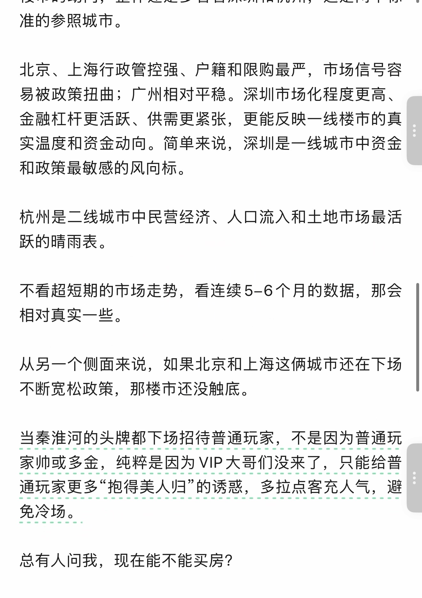
查看本页自动识别文字（OCR待核对） · 9 处低置信度提示
以下为未经逐字核对的自动识别结果，请以上方原图为准。
识别器标记 9 处低置信度，请对照截图核对
这些是识别器的风险提示，并不等于已确认的错误。
- 北京、 上海行政管控强、 户籍和限购最严， 市场信号容
- 实温度和资金动向。 简单来说， 深圳是一线城市中资金
- 杭州是二线城市中民营经济、 人口流入和土地市场最活
- 跃的晴雨表。
- 不断宽松政策， 那楼市还没触底。
- 当奉淮河的头牌都下场招待普通玩家， 不是因为普通玩
- 家帅或多金， 纯粹是因为 VIP 大哥们没来了， 只能给普
第 3 页 · 原始截图
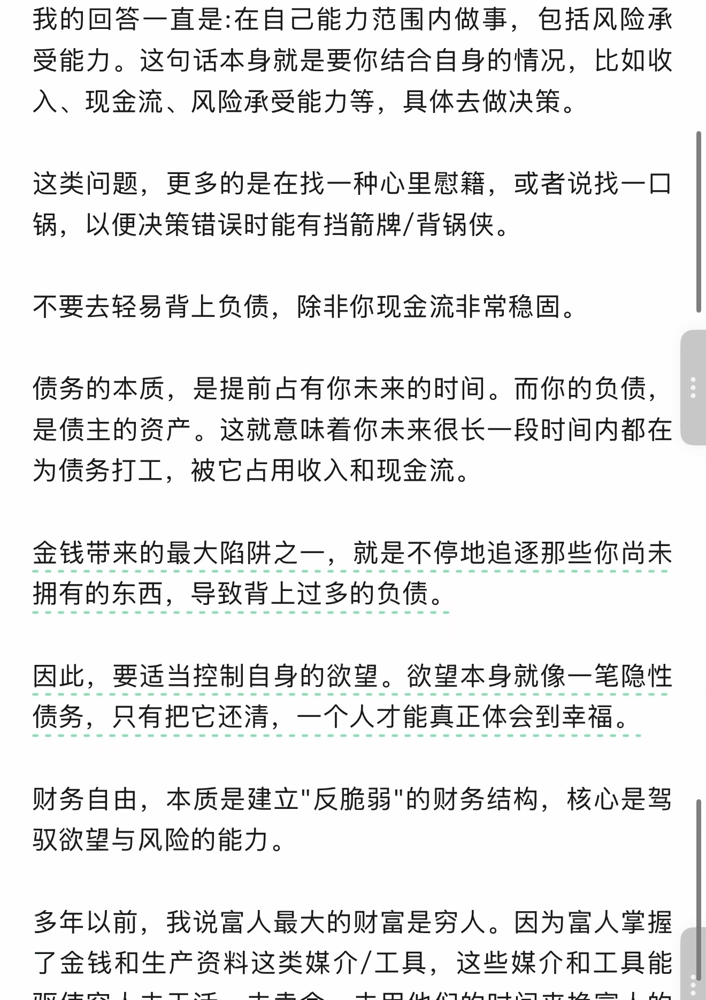
查看本页自动识别文字（OCR待核对） · 8 处低置信度提示
以下为未经逐字核对的自动识别结果，请以上方原图为准。
识别器标记 8 处低置信度，请对照截图核对
这些是识别器的风险提示，并不等于已确认的错误。
- 这类问题， 更多的是在找一种心里慰籍， 或者说找一口
- 锅， 以便决策错误时能有挡箭牌 / 背锅侠。
- 债务的本质， 是提前占有你未来的时间。 而你的负债， 上
- 债务， 只有把它还清， 一个人才能真正体会到幸福。
- 财务自由， 本质是建立 " 反脆弱 " 的财务结构， 核心是驾
- 驭欲望与风险的能力。
- 多年以前， 我说富人最大的财富是穷人。 因为富人掌握
第 4 页 · 原始截图
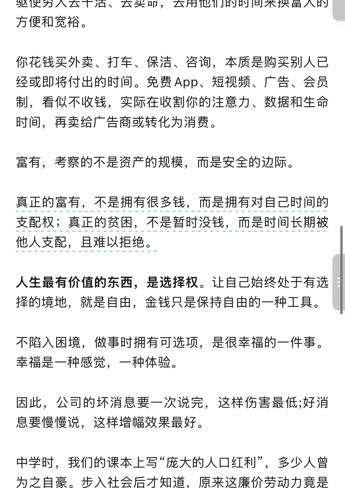
查看本页自动识别文字（OCR待核对） · 11 处低置信度提示
以下为未经逐字核对的自动识别结果，请以上方原图为准。
识别器标记 11 处低置信度，请对照截图核对
这些是识别器的风险提示，并不等于已确认的错误。
- 驱使穷人去干活、 去卖命， 去用他们的时间来换富人的
- 制， 看似不收钱， 实际在收割你的注意力、 数据和生命
- 富有， 考察的不是资产的规模， 而是安全的边际。
- 人生最有价值的东西， 是选择权。 让自己始终处于有选
- 中学时， 我们的课本上写 "庞大的人口红利 "， 多少人曾
- 为之自豪。 步入社会后才知道， 原来这廉价劳动力亮是
第 5 页 · 原始截图
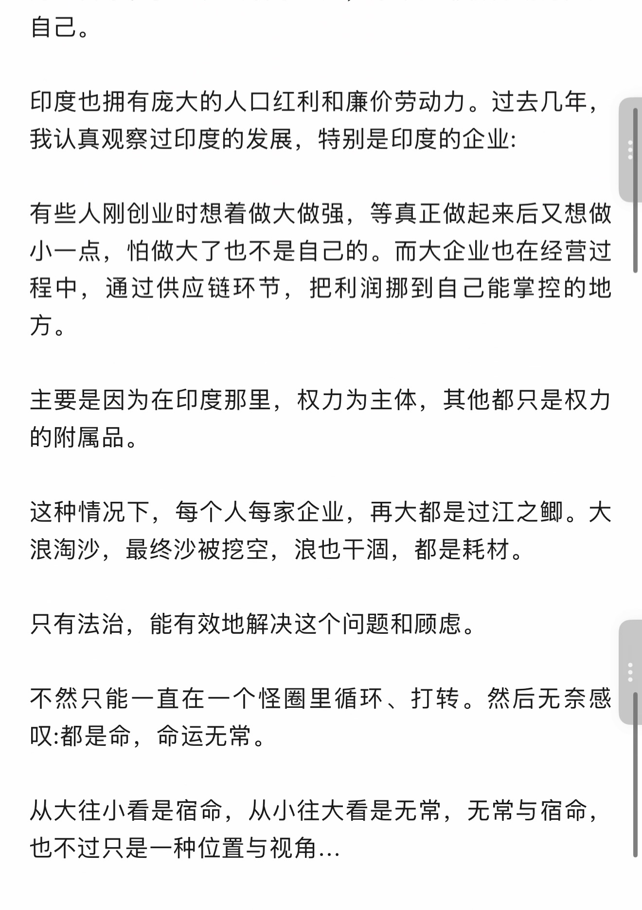
查看本页自动识别文字（OCR待核对） · 10 处低置信度提示
以下为未经逐字核对的自动识别结果，请以上方原图为准。
识别器标记 10 处低置信度，请对照截图核对
这些是识别器的风险提示，并不等于已确认的错误。
- 印度也拥有庞大的人口红利和廉价劳动力。 过去几年，
- 我认真观察过印度的发展， 特别是印度的企业 :
- 这种情况下， 每个人每家企业， 再大都是过江之鲫。 大
- 浪淘沙， 最终沙被挖空， 浪也干泗， 都是耗材。
- 只有法治， 能有效地解决这个问题和顾虑。
- 叹 :都是命， 命运无常。
- 从大往小看是宿命， 从小往大看是无常， 无常与宿命，
- 也不过只是一种位置与视角 .…
第 6 页 · 原始截图
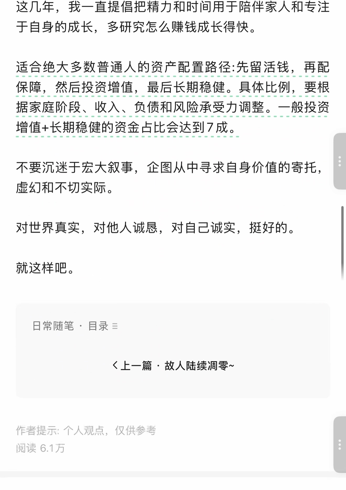
查看本页自动识别文字（OCR待核对） · 19 处低置信度提示
以下为未经逐字核对的自动识别结果，请以上方原图为准。
识别器标记 19 处低置信度，请对照截图核对
这些是识别器的风险提示，并不等于已确认的错误。
- 过合弗大多改首通人的资配置路管 ; 先留活钱， 再配
- 不要沉迷于宏大叙事， 企图从中寻求自身价值的寄托， ,一
- 对世界真实， 对他人诚忌， 对自己诚实， 挺好的。
- 日常随笔， 目录 =
- 《上一篇故人陆续凋零 ~
- 阅读 6.1 万
第 7 页 · 原始截图
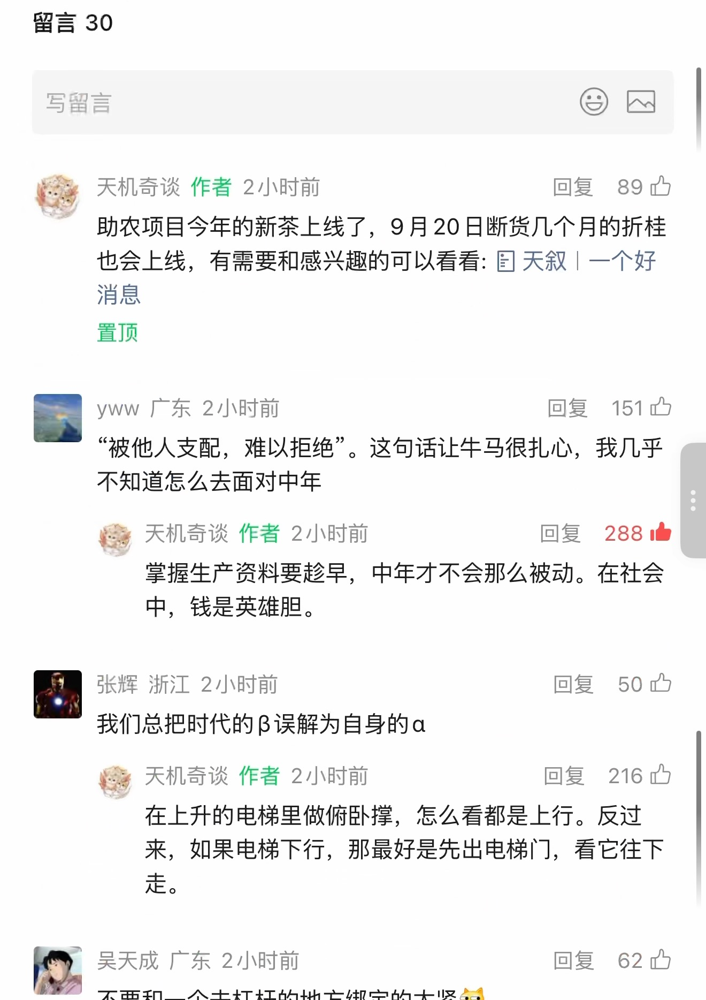
查看本页自动识别文字（OCR待核对） · 36 处低置信度提示
以下为未经逐字核对的自动识别结果，请以上方原图为准。
识别器标记 36 处低置信度，请对照截图核对
这些是识别器的风险提示，并不等于已确认的错误。
- as ea |
- 各” 天机奇谈作者 2 小时前回复 89 内
- 助农项目今年的新茶上线了，9 月 20 日断货几个月的折桂
- 也会上线， 有需要和感兴趣的可以看看 : 团天叙 | 一个好
- 图 yww 广东 2 小时前回复 ”151 叱
- “被他人支配， 难以拒绝 ”。 这句话让牛马很扎心， 我几乎
- 粮天机奇谈作者 2 小时前回复 mm 二
- 四张辉浙江 2 小时前回复 ”50 请
- 我们总把时代的 B 误解为自身的 a
- 天机奇谈作者 2 小时前回复 ”216 只
- 在上升的电梯里做俯卧撑， 怎么看都是上行。 反过
- 来， 如果电梯下行， 那最好是先出电梯门， 看它往下
- 吴天成广东 2 小时前回复 ”62 四
- 不要和一个去杠杆的地方绑定的太紧全
第 8 页 · 原始截图
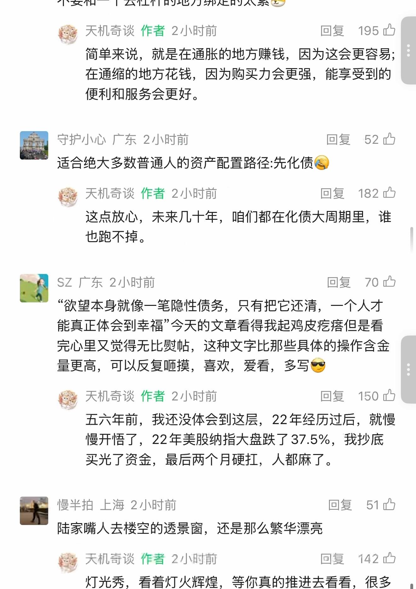
查看本页自动识别文字（OCR待核对） · 46 处低置信度提示
以下为未经逐字核对的自动识别结果，请以上方原图为准。
识别器标记 46 处低置信度，请对照截图核对
这些是识别器的风险提示，并不等于已确认的错误。
- 不要和一个去杠杆的地方绑定的太紧盒
- 聊天机奇谈作者 2 小时前回复 195 四
- 图守护小心广东 2 小时前回复 ”52 内
- 适合绝大多数普通人的资产配置路径 : 先化债登
- 隔天机奇痰作者 2 小时前回复 182 内
- 这点放心， 未来几十年， 咱们都在化债大周期里， 谁
- SzZ 广东 2 小时前回复 70 办
- “欲望本身就像一笔隐性债务， 只有把它还清， 一个人才
- 能真正体会到幸福今天的文章看得我起鸡皮疙将但是看
- 完心里又党得无比必帖， 这种文字比那些具体的操作含金
- 量更高， 可以反复顺摸， 喜欢， 爱看， 多写答
- 聊天机奇谈作者 2 小时前回复 150 中
- 慢开悟了，22 年美股纳指大盘跌了 37.5%， 我抄底
- 买光了资金， 最后两个月硬打， 人都麻了。
- 慢半拍上海 2 小时前回复 ”51
- 条天机奇谈作者 2 小时前回复 ”142 让
- 灯光秀， 看着灯火辉煌， 等你真的推进去看看， 很多 |
第 9 页 · 原始截图
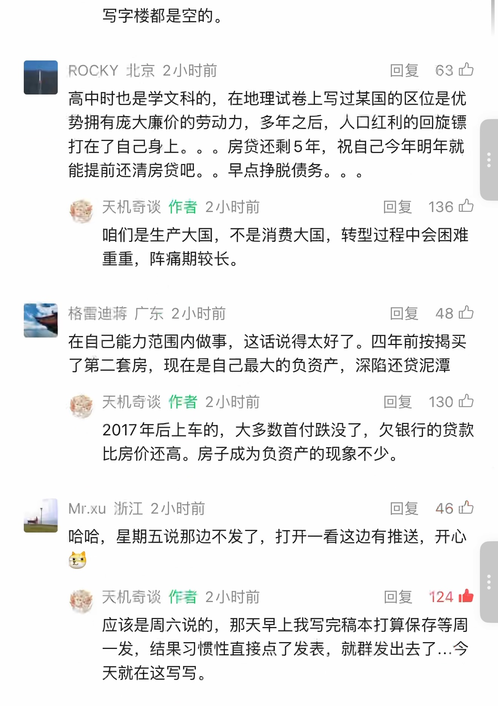
查看本页自动识别文字（OCR待核对） · 36 处低置信度提示
以下为未经逐字核对的自动识别结果，请以上方原图为准。
识别器标记 36 处低置信度，请对照截图核对
这些是识别器的风险提示，并不等于已确认的错误。
- ROCKY 北京 2 小时前回复 ”63 只
- 势拥有庞大廉价的劳动力， 多年之后， 人口红利的回旋镖
- 打在了自己身上。。。 房贷还剩 5 年， 祝自己今年明年就
- 天机奇谈作者 2 小时前回复 ”136 号
- 9 格雷迪兰广东 2 小时前回复如已
- 了第二套房， 现在是自己最大的负资产， 深陷还贷泥潭
- 司天机奇谈作者 2 小时前回复 ”130 四
- 2017 年后上车的， 大多数首付跌没了， 欠银行的贷款
- 可 Mr.xu 浙江 2 小时前回复 ”46 证
- 多
- 黎》 关旨示训动过茹回复 124 曙
- 一发， 结果习惯性直接点了发表， 就群发出去了 ... 今
第 10 页 · 原始截图
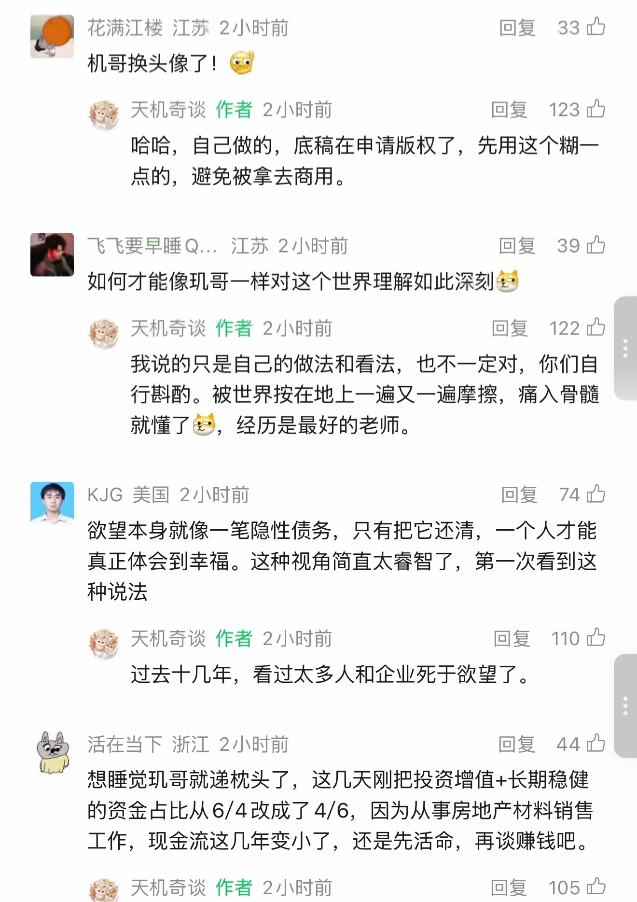
查看本页自动识别文字（OCR待核对） · 48 处低置信度提示
以下为未经逐字核对的自动识别结果，请以上方原图为准。
识别器标记 48 处低置信度，请对照截图核对
这些是识别器的风险提示，并不等于已确认的错误。
- | 花满江楼江苏 2 小时前回复 ”33 由
- 机哥换头像了 ! 留
- 糠天机奇谈作者 2 小时前回复 123 由
- 点的， 避免被拿去商用。
- 飞飞要早睡 Q@..， 江苏 2 小时前回复 ”39 四
- 如何才能像现哥一样对这个世界理解如此深刻借
- 檀天机奇谈作者 2 小时前回复 122 四
- 行其酌。 被世界按在地上一遍又一遍摩探， 痛入骨髓
- 就懂了售， 经历是最好的老师。
- KJG 美国 2 小时前回复 74 四
- “欲望本身就像一笔隐性债务， 只有把它还清， 一个人才能
- 真正体会到幸福。 这种视角简直太害智了， 第一次看到这
- 各天机奇谈作者 2 小时前回复 110 四
- 他活在当下浙江 2 小时前回复 ”44 办
- 想睡觉丽哥就递枕头了， 这几天刚把投资增值 + 长期稳健
- 的资金占比从 6/4 改成了 4/6， 因为从事房地产材料销售
- 工作， 现金流这几年变小了， 还是先活命， 再谈赚钱吧。
- 攻天机奇谈作者 2 小时前回复 ”105
第 11 页 · 原始截图
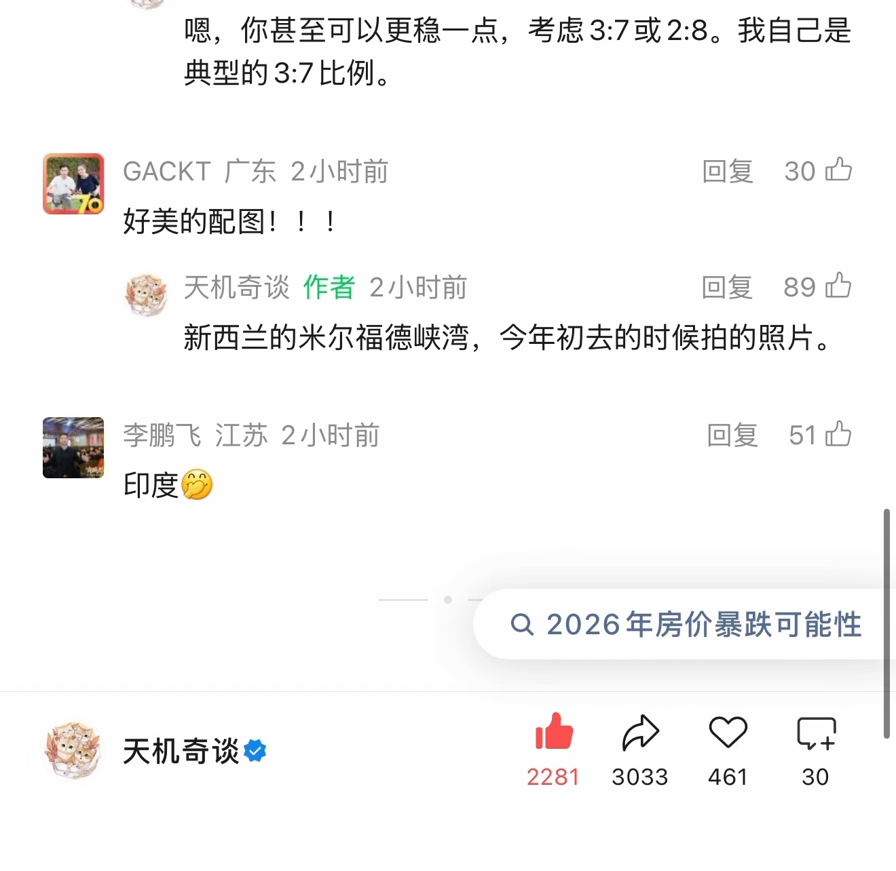
查看本页自动识别文字（OCR待核对） · 22 处低置信度提示
以下为未经逐字核对的自动识别结果，请以上方原图为准。
识别器标记 22 处低置信度，请对照截图核对
这些是识别器的风险提示，并不等于已确认的错误。
- 嗯， 你甚至可以更稳一点， 考虑 3:7 或 2.8。 我自己是
- GACKT 广东 2 小时前加 30 中
- 好美的配图 ! ! 1
- 各天机奇谈作者 2 小时前回复 89 中
- 李鹏飞江苏 2 小时前回复 ”51 让
- 印度从
- 于天机奇谈台西必人
- 2281 3033 461 30
按日期浏览全部来源（同日按条目标识排序）
回到页首 ↑